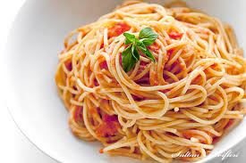

Makarna

En kolay yemekler arasında başı çeken makarnanın nasıl yapıldığına yönelik sorular Google’da en çok araştırılan konulardan biri. İlk defa yemek yapacak olanlar, üniversite öğrencileri, yeni evlenenler için makarna tarifinin püf noktalarını derledik.
Malzemeler
- 8 su bardağı su
- 1 silme yemek kaşığı tuz
- 250 gr. makarna(250gr.lık paket veya 500gr.lık paketlerde yarım paket)
- Yarım fincandan biraz fazla sıvı yağ (En sağlıklısı zeytinyağıdır ama bazıları makarnada kokusunu sevmez, tadını sevdiğiniz başka bir sıvı yağ da kullanabilirsiniz.)
- Makarna Süzgeci
Pişirme Önerisi
Orta boy bir tencereye 8 bardak soğuk su dökülür ve üzerine 1 silme yemek kaşığı tuz eklenip, tencerenin kapağı kapatılır ve açık ateşte makarna suyu kaynayana kadar bırakılır.
Su kaynadıktan sonra, 250gr. makarna kaynamakta olan suyun üzerine dökülür ve pişmeye başlar, ama bu kez tencerenin kapağı kapatılmaz. Makarnayı tencereye koyduktan sonra, ilk birkaç dakika 3-5 sefer karıştırırsanız, makarnanın birbirine yapışmasını da önlersiniz, çubuk makarna yapıyorsanız 7-8 defa karıştırmanız daha uygun olur, böylece çubuklar pişerken birbirine dolanıp yapışmaz. Tencerenizin yapısına ve makarnanın türüne göre pişme süresi 10-15 dakikadır.
Nasıl Yapılır
- Büyük ve derin bir tencere seçilmelidir
Makarnayı yapacağınız tencerenin uygun büyüklükte olması gerekir. Su yüksekliği tencerenin 3/4'ünü geçmemelidir. Fazla su doldurulursa kaynadığı zaman tencereden taşar, az suda ise makarna iyi pişmez ve tencerenin dibine yapışabilir.
- Tuz, su kaynadıktan sonra eklenmeli
Makarna bol tuzlu suda haşlanmalıdır. Tuzu baştan değil, su kaynadıktan sonra 5 litre suya 1 yemek kaşığı olacak şekilde eklemek gerekir.
- Makarnanın yapışmaması için
Makarnayı zeytinyağı ve tuz ilavesiyle haşlayabilirsiniz.
- Makarnaları suya atınca hemen karıştırmalıdır
Makarnayı suya atmadan önce iyice fokurdaması beklenmelidir Ne kadar aceleniz olursa olsun su iyice kaynamadan makarnaları tencereye atmamak gerekir.
- Sos için makarnanın haşlama suyundan biraz ayrılmalıdır
Lezzetli bir sos için makarnayı haşladığınız sudan, makarnayı süzmeden önce 1 bardak ayrılmalıdır. Nişasta içeren bu su makarna sosuna kıvam ve lezzet verir, kolayca nüfuz etmesini sağlar.